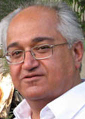

پذيرش > تریبون > گفت و گو > رهايي زنان نتيجهي مبارزات خود زنان است


 رهايي زنان نتيجهي مبارزات خود زنان است رهايي زنان نتيجهي مبارزات خود زنان است
6 اسفند 1385 - گفتگو با بابك احمدي/ پریسا کاکائی - نسخه قابل چاپ
جناب آقای بابک احمدی، شما به عنوان نويسنده، مترجم، و صاحب نظر در مسايل اجتماعي ايران، جزو آن دسته از روشنفكران معاصر كشورمان هستيد كه همواره جنبش مستقل زنان هم وطن تان را صادقانه و متواضعانه مورد حمايت قرار داده ايد، در تجمع هاي مسالمت آميز و حق خواهانهي زنان كشورتان عملا حضور يافته ايد و در تجمع روز 22 خرداد (روز همبستگي زنان ايران) مورد ضرب و شتم هم قرار گرفتيد. هم چنين در سخنراني هايتان از حقوق حقه زنان هموطن تان همواره به صراحت و شجاعت دفاع كرده ايد، حال ضمن تشکر به خاطر حمايت هاي بي دريغ تان ، پرسش های خود را نخست با این مطلب آغاز می کنم که شما يكي از اولين حاميان كمپين يك ميليون امضا هستيد، چه ويژگيهايي در اين كمپين نظر تان را جلب كرده است؟
با سلام و سپاس از فعاليتهاي شما در جهت كسب حقوق دمكراتيك و برابري كامل اجتماعي و حقوقي زنان و مردان. كمپين يك ميليون امضا فعاليتي مدني و نمايانگر حق اعتراض شهروندي و خواست دگرگوني قوانين با شيوههايي قانوني و مسالمتآميز است. كنشي است دمكراتيك، سنجيده و غيرخشن كه ميتواند فراتر از اقدام براي دستيابي به اهداف خود درسي براي ديگر مبارزان راه آزادي نيز باشد. اين كمپين با توجه به ضرورت ايجاد آگاهي اجتماعي در ميان زنان ستمديده موقعيتي انتقالي را فراهم ميآورد، يعني خواستهايي مشخص و صريح را پيش ميكشد كه در جريان مبارزهاي بخردانه منجر به پيدايش و گشايش خواستهايي ديگر و تازهتر خواهند شد. هدف كمپين مهم و دسترسپذير است. با توجه به ژرفا و آشكارگي نابرابري اجتماعي و حقوقي زنان با مردان در ايران زمينهي واقعي و عيني براي جمعآوري يك ميليون امضا در اعتراض به تبعيض مندرج در قوانين وجود دارد. فعاليت دمكراتيك در راه اين هدف زمينهي ذهني مساعدي را ميآفريند و ميتوان با پشتوانهي مواضع يك ميليون شهروند ايراني اهداف ديگري را براي ادامهي مبارزه تعيين كرد. به بيان ديگر، كمپين پايان مبارزه نيست، ادامهي مبارزات پيشين و راهگشاي فعاليتهاي آينده است.
كمپين يك ميليون امضا پس از تجمع مسالمتآميز زنان در 22 خرداد 1385، ميدان 7 تير و اعتراض آنها به قوانين تبعيضآميز آغاز به كار كرد. خواسته حقوقي زنان خواسته جديدي نيست و درواقع بيش از يك صد سال است كه جنبش حقوقي زنان برابري قانوني را به شيوههاي گوناگون طرح و مطالبه كرده و در اين روند متناسب با شرايط سياسي و اجتماعي زمانه خود فراز و فرودهايي را از سر گذرانده. اكنون جنبش زنان ميكوشد از طريق جمعآوري يك ميليون امضا به روش چهره به چهره و رودررو با زنان و مردان در خيابان و كوچه و محله... هم در راه گسترش آگاهي و ايجاد خواسته حقوقي و هم در جهت گسترش ارتباط با اقشار و گروههاي اجتماعي گام بردارد. به نظر شما جنبش زنان چگونه ميتواند اين حركت را به ثمر برساند، موانع بازدارنده در اين روند چيست؟
آشكارا مهمترين مانع بازدارنده حكومتي است كه موظف است قوانين را اجرا كند، قوانيني كه ساخته و پرداختهي معتقدان به نابرابري اجتماعي زن و مرد هستند. اينان در اثبات حقانيت چنان نابرابرياي دلايل زيادي كه به زعم خودشان «عقلي و نقلي» هستند ارائه ميكنند، با هر گونه خواست دگرگوني قوانين مخالفاند و حكومت نيز در اين راه به طور منظم و پيگير دست به خشونت ميزند. اما اين قدرت مسلط يگانه مانع بازدارنده نيست. موانع ديگر را كساني ساختهاند كه كمپين را رد ميكنند اما راه ديگري براي مبارزه به ما نشان نميدهند. يك مانع آن «دمكراتها»يي هستند كه ميگويند بهتر است زنان مبارزهي موجود و «تندروي»هاي خود را متوقف كنند تا آنان بتوانند اصلاحات را به پيش ببرند و در آينده «حق زنان را به ايشان بدهند». مانع ديگر آن چپگراياني هستند كه ميگويند مبارزهي واقعي و عملي منش بورژوايي دارد و بهتر است زنان براي ساختن بهشت سوسياليستي بكوشند تا در آن بهشت آزاد شوند. هر دو گروه ادعاي «بخشش حقوق به زنان در آينده» را همراه ميكنند با پيشنهاد شيوههايي غير از مبارزات خود زنان در يك جنبش مستقل و آگاه.
برخي از منتقدين، كمپين را يك حركت ليبرالي ميدانند و معتقدند بورژوازي از طريق چنين حركتهايي سعي در انحراف جنبش زنان دارد. آنان ميگويند كه خواست تغيير قوانين، خواستي حداقلي و ناچيز است و گامي به عقب. ستم جنسيتي در ساختارهاي اجتماعي بازتوليد ميشود و حتي با حذف قوانين جنسيتگرا در وضعيت غالب زنان تغيير محسوسي به وجود نخواهد آمد. نظر شما در اين باره چيست؟
بگذاريد كمپين را ليبرالي بخوانند. من به عنوان يك ليبرال از اين برچسب نگراني ندارم. سوسيالدمكراسي و احزاب سبز اروپايي سرانجام در حاشيهي امن ليبراليسم جاي گرفته و با پذيرش اولويت آزادي و حقوق دمكراتيك مبارزهاي مسالمتآميز و غيرخشن را در راه برابري بيشتر به پيش ميبرند. اين يگانه شكل دمكراتيك تحقق آرمانهاي سوسياليستي است. بقيهي گرايشهاي چپگرا سرانجام جايي مخالفت خود را با آزادي با زدن برچسب «دمكراسي ليبرالي» به آن آشكار خواهند كرد. كساني كه به فعالان كمپين ايراد ميگيرند كه چرا برنامهاي بورژوايي را اجرا ميكنند لطفاً زحمت بكشند و به ما بگويند كه برنامهي پرولتري در تقابل با آن برنامهي بورژوايي چيست و كجاست. در ضمن به ما بگويند كه كدام مبارزهي وسيع اجتماعي را براي دستيابي به حقوق برابر زنان و مردان بر اساس سياستها و برنامههاي كارگري سازمان دادهاند. خيلي آسان است كه گوشهاي بنشينند و با ادعاي جهانبيني پرولتري مبارزهي به راستي موجود را به عنوان خواست حداقلي نفي كنند، و اگر زني از آنان بپرسد كه خواست حداكثري را چگونه برآورده خواهند كرد پاسخ بدهند «روزي كه ديكتاتوري پرولتاريا را بسازيم»، و در برابر اين ايراد هم که در شكلهاي به راستي موجود آن ديكتاتوري حقي به كسي و به زني داده نشده و برابري اجتماعي در اردوگاههاي كار اجباري شكل گرفته هشدار بدهند كه «خانم جان! شما اسير تبليغات بورژوايي شدهايد».
آنان از تكرار اين نظر كه ستم جنسي نتيجهي ساختارهاي اجتماعي جوامع طبقاتي است نتيجه ميگيرند كه زنان بايد مبارزهي خود براي كسب حقوق برابر را متوقف كنند و به صفوف احزاب پرولتري بپيوندند، كه البته در جامعهي ما احزابي ناموجودند و همواره در محفلهايي چندنفره در حال شكلگيري و در همان زمان در حال انشعاب هستند! اما كساني كه چنين نظري را پيش ميكشند چگونه منكر تفاوت وضعيت زنان در جوامع طبقاتي مختلف ميشوند؟ آيا وضع زنان سوئد و زنان عربستان سعودي با هم فرق دارد يا نه؟ خود حضرات (كه بيشتر هم مرد هستند) اگر زن بودند ترجيح ميدادند در كدام يك از اين دو كشور زندگي و كار كنند؟ همچنان كه اظهار فضل ميكنند كه اين هر دو جوامعي طبقاتياند و درنتيجه «مسالهي زن» به طور ريشهاي در آنها حل نشده، كدام را انتخاب ميكردند؟ آيا واقعاً معتقدند كه وضعيت زنان در اين دو كشور «تفاوت محسوسي با هم ندارند»؟ در اين صورت بايد گفت كه نه فقط قوهي عقلي بلكه قوهي حسي آقايان هم مشكل دارد.
يكي از پرسشهاي رايج از فعالين كمپين مزبور اين است كه آيا اقدامهاي جمعي مانند كمپين يك ميليون امضا ميتواند در تغيير قوانين تاثيرگذار باشد؟
مساله فقط به هدف تعيينشده خلاصه نميشود. نكتهي مهم آن فعاليت سازمانيافته و سنجيدهاي است كه در راه تحقق هدف شكل ميگيرد و براي همهي قشرهاي ستمديده آموزنده است. زنان و مردان فعال در اين كمپين براي كسب حمايت شهروندان از تغيير قوانين راههاي مستقيم گفتوگو و روشنگري را ميآزمايند. آنچه را كه براي خودشان دانسته و شناخته شده است به ديگران (به ويژه به زناني كه از نابرابري حقوقي رنج ميبرند و هنوز درك درستي از علل اقتصادي، اجتماعي و سياسي آن ندارند) توضيح ميدهند و چه بسا از شيوههاي مقابلهاي كه زنان محروم در متن زندگي خود يافتهاند باخبر ميشوند. اين تبادل تجربهها و آگاهيها امري مهم و مرحلهاي ضروري در جريان پيكار دمكراتيك است. كمپين فعاليتي به نسبت درازمدت است. درنتيجه، فعالان را با شكلهاي تازهي سازمانيابي و تشكل روبرو ميكند.
به پرسش شما دربارهي احتمال موفقيت كمپين در دسترسي به هدف مشخصاش فقط ميتوان در جريان عمل و مبارزه پاسخ داد. البته هستند كساني كه پيشاپيش شكاكانه هر فعاليتي را محكوم ميكنند يا هدف آن را دسترسناپذير و مردود ميخوانند. به اين حاشيهنشينان ميگويم كه حتي اگر جنبش زنان با در دست داشتن يك ميليون امضا شهروندان ايراني نتواند قوانين را تغيير دهد باز در انجام كار مهم ديگري موفق شده است. توانسته آگاهي از منش غير دمكراتيك قوانين موجود و خواست ضرورت دگرگوني آنها را گسترش دهد. در اين صورت جنبش زنان بر زمين محكمتري خواهد ايستاد و با پشتوانهي حمايت و همنظري شمار قابل توجهاي از مردم مواضع خود را تدقيق و بيان خواهد كرد. پيكار دمكراتيك زنان براي كسب برابري و حقوق شهروندي مبارزهاي است طولاني و فرهنگي. توجه به مبارزات زنان در كشورهاي ديگر و پيشرفتهتر نشان ميدهد كه از پس مبارزهي طولاني و روشنگريهاي فرهنگي بود كه دستاوردها متحقق، مستحكم و راهگشاي خواستهايي ديگر شدند. امروز كه من در حال نوشتن اين متن هستم در ميان مهمترين اخبار رسانههاي جهاني شنيدهام كه زنان پرتغال و نيروهاي دمكراتيك در آن كشور (كه سي سال پيش در پي انقلابي مردمي از شر ديكتاتوري خلاص شده بودند) سرانجام حق قانوني سقط جنين را از طريق برگذاري همهپرسي در سطح ملي به دست آوردهاند.
در قسمتي از طرح كمپين آمده است كه «برابري حقوقي زن و مرد مغايرتي با اسلام ندارد». اين فراز از طرح كمپين با واكنش بخشهايي از نيروهاي «لاييك» جامعه مواجه شد. نظر شما در مورد حقوق زن در اسلام چيست؟
واژهي «اسلام» در تعريف يا تشخيص يكي از بزرگترين اديان جهان به كار ميرود. اين دين يك واقعيت تاريخي و اجتماعي است. هيچ واژهاي نميتواند روشنگر تمامي تاويلهاي مختلفي باشد كه از اين واقعيت ارائه شدهاند. ايمان ديني همواره شكل تاويلي مييابد. نميتوان با گفتن «اسلام» و «مسلمان» روشن كرد كه كدام برداشت و تاويل مورد نظر است. راست است كه در تاويلهايي از احكام بنيادين و اوّليهي دين برابري زن و مرد پذيرفته نيست. اما در تاويلهايي ديگر اين برابري پذيرفته و ستودني است. ما به نام تاويلهاي دستهي دوم به افراد دستهي نخست ميگوييم كه براي بسياري از مسلمانان كه زندگي مومنانه يعني زيستن هرروزه با خداوندشان در جهان را برگزيدهاند برابري زن و مرد امري ممكن و پذيرفتني است. آن نيروهاي لاييك كه فكر ميكنند فارغ از هر اشارهاي به باورهاي ديني و ايمان مردمان ميتوان از حقوق دمكراتيك آنها دفاع كرد به ياد آورند كه قوانين تبعيضآميز كنوني به نام دين شكل گرفته و اجرا ميشوند، در حالي كه شمار فراواني از مومنان از جمله برخي از مراجع عاليرتبهي ديني هم به اين قوانين معترضاند. درنتيجه، خواست دگرگوني اين قوانين ناگزير به مباحث فقهي و حتي كلامي كشيده ميشود همانطور كه ناگزير به مباحث حقوقي هم كشيده ميشود. لائيسيته به معناي گريز از بحث ديني و تعطيل كردن آن نيست. خاصه وقتي كساني هستند كه با تكيه به تاويلهايي از احكام ديني و منحصر كردن تماميّت دين به ادراك خودشان از آن، در عمل حقوق طبيعي و اوّليهي انسانهايي را ناديده ميگيرند. به اينان ميگوييم كه تاويلهايي دمكراتيكتر و امروزيتر از احكام دين هم ممكن هستند.
به نظر شما قوت و ضعف اين حركت مدني در چيست؟ چه راهكارهايي را جهت بهبود عملكرد چنين حركتي پيشنهاد ميكنيد؟
مهمترين نكته اين است كه كمپين با بصيرت زنانه شكل گرفته است. زناني مبارز آن را مطرح كرده و سازمان دادهاند. آنان در اين راه تحمل دشواريهايي را به جان خريدهاند و كار را پيش ميبرند. اين صداي جنبش مستقل زنان است. براي من كه مردي بارآمده در جامعهاي مردسالار و پدرسالار هستم فعاليت در خدمت جنبش مستقل زنان آموزنده و رهاييبخش است. من به اين نكته اعتقاد راسخ دارم كه «رهايي زنان نتيجهي مبارزات خود زنان است» اين به معناي انكار حق مردان براي شركت و نظر دادن در مبارزهاي نيست كه به سرنوشت و آزاديهاي انساني خود آنان هم مربوط ميشود. بسياري از مردان امروز دانستهاند كه در جامعهاي كه حقوق اجتماعي و منزلت زنان كمتر از حقوق و شان مردان باشد، مردان نيز آزاد نيستند. در همراهي با جنبش مستقل زنان و درس گرفتن از آن ميتوان زمينههاي ديگر پيكار دمكراتيك را گسترش داد. من پيشنهاد راهكار تازهاي ندارم. خود زنان و مردان فعال در كمپين به خوبي ميدانند كه چگونه بايد با مردم سخن راند و خواهان ياري و شركتشان در مبارزه شد.
جناب آقای بابک احمدی، از فرصتی که در اختیار سایت تغییر برای برابری گذاشتید بسیار سپاسگزارم.
ارسال به
بالاترین
،
توییتر
،
فریندفید
،
فیسبوک
در همين بخش :
 دهمین دورۀ مراسم تندیس صدیقه دولت آبادی ۱۳۹۲ دهمین دورۀ مراسم تندیس صدیقه دولت آبادی ۱۳۹۲
کارت پستالهایی به بهانهی هشت مارس و به یاد همهی مبارزین راه برابری
بیانیه بیش از 350 تن از مدافعان حقوق زنان به مناسبت روز جهانی زن؛ زنان هر روز فرودستتر میشوند
لباسی که برای تن ما دوخته اند! /اعظم بهرامی
چالشها و چشمانداز فعالیت مدنی زنان
ديگر بخش ها :
طرح یک میلیون امضا
|
مقالات
|
سایت نوشته ها
|
اخبار
|
گزارش كمپين
|
گفت و گو
|
علیه سکوت
|
كوچه به كوچه
|
نامه های شما
|
گزارش ویژه
|
گفتگو با اعضا
|
ویژه سالگرد کمپین
|
تصویر برابری
|
دل آرام علی
|
تریبون
|
مقالات
|
تاریخ شفاهی
|
خارج از چارچوب
|
کتابخانه
|
درباره کمپین
|
کمپین در شهرها
|
کمپین در بند
|
صدای تغییر
|
ویژه 22 خرداد
|
لایحه حمایت از خانواده
|
گالری
|
عشا مومنی
|
امیر یعقوبعلی
|
خدیجه مقدم
|
راحله عسگری زاده و نسیم خسروی
|
پروین اردلان،جلوه جواهری، مریم حسین خواه، ناهید کشاورز
|
زینب پیغمبرزاده
|
سعیده امین، سارا ایمانیان، محبوبه حسین زاده، ناهید کشاورز و همایون نامی
|
احترام شادفر
|
نسیم سرابندی زاده،فاطمه دهدشتی
|
وبلاگ مهمان
|
پرونده خرم آباد
|
دستگیری ها
|
مریم مالک
|
پرستو اللهیاری
|
مهرنوش اعتمادی
|
سمیه رشیدی
|
Other Languages
|
همراهان
|
«فراخوان کمپین ده روز با بهاره هدایت»
| English
|